RTA-SUM SPM User Guide
Introduction
This User Guide provides a guideline for the configuration and integration of the ETAS developed RTA-SUM SPM. RTA-SUM SPM module has been developed towards the Software Defined Vehicle requirements, specifically, the SDV-8217 specifications and related specifications listed in Section References. General guidelines on the common steps and workflow for RTA-SUM integration can be found in RTA- SUM Getting Started Guide.
Definitions and Abbreviations
Terms and Abbreviations |
Definitions |
|---|---|
AUTOSAR |
AUTOmotive Open System ARchitecture |
BSW |
Basic Software |
CAN |
Controlled Area Network |
CDD |
Complex-Device Driver |
CanIf |
Can Interface AUTOSAR BSW Module |
PGTT |
Power Graph Traversal Table |
PM |
Power Manager |
RTE |
Run-Time Environment AUTOSAR middleware between Application Software Layer and Basic Software |
SE |
Software Entity (Assume it as generic software module/function or Software Service) |
SM |
Software Manager |
SPM |
Software/Power manager |
SUM |
Standardized Utility Module |
SWCD |
Software Component Description |
SoAd |
Soacket Adaptor AUTOSAR BSW Module |
Module Overview
The RTA-SUM SPM, Software/Power Manager, is a Complex-Device Driver of the standardized architecture of AUTOSAR. The SPM contains in this architecture two sub-modules: the SM and the PM. Both of them contribute to the global functionalities of the RTA-SUM SPM. So that they are just mentioned as generic “SPM” at the scope fo this document. SPM acts itself as a manager for the activation and the deactivation requests of specific Software Entities (Services) and hardware resources. A SPM instance can control the status of a remote Software Services (i.e. hosted on a remote device) by the means of a RPC. The RPC requires the SPM instances as interfaces for the communication messages exchange and the resource management. A Software Services can directly request its own activation/deactivation to the SPM (local request) or SPM activates it on base of a remote request. SPM instances define and maintain by configuration, a list of Software Entities and Resources to activate on the base of a received request. Each Software Entity has got its own list of dependencies that takes the name of Power Profile or Activation Profile. Before activating the requested Entity, the SPM shall satisfy the activation/deactivation of all the items in the Activation Profile. This may involves in other activation/deactivation requests to local Software Entities or remote host (sending message to the remote SPM instance). So that the SPM shall be able to manage a recursive communication path to satisfy the incoming request.
RTA-SUM SPM knows the network topology by from the configuration and then from the calibration of a table that is called PGTT (Power Graph Traversal Table). This table contains the route to reach the destination host of a SPM request. Each “harbor” in the route is a remote host. Not all the hosts in the route must contain a requested entity from the source: the SPM instance in the host can just works as a gateway for the request. The PGTT also defines the command to send to the next hop of the network in order to wake-up the remote SPM instance.
RTA-SUM SPM shall also monitor the status of the remote nodes in the network. RTA-SUM SPM can monitor the status of a remote host using the heartbeat communication protocol. This protocol forces each host in the network to send a periodic signal that contains a rolling counter, very close to a real human heartbeat. Whenever a node in the network wants to communicate with another node, the source node can “listen” the heartbeat of the destination one. If the destination node heartbeat is 0, then the destination node cannot be reached by the communication. In this case, the source of the communication starts the diagnostic procedure for raising up a LossOfCom condition. Same value on the opposite side: if a destination node in communication with a source loses the heartbeat of the source, it starts the same diagnostic.
RTA-SUM SPM is a cross-domain module, so that it can exchange information among different ECU domains, by the means of SPM instances communication on different bus system.
RTA-SUM SPM communicates on:
Ethernet for: * Send/Receive an activation/deactivation request to a remote host * Send/Receive request acknowledge and request status to a remote host * Perform a inner-domain selective wake-up
CAN to perform the selective wake-up of a remote host

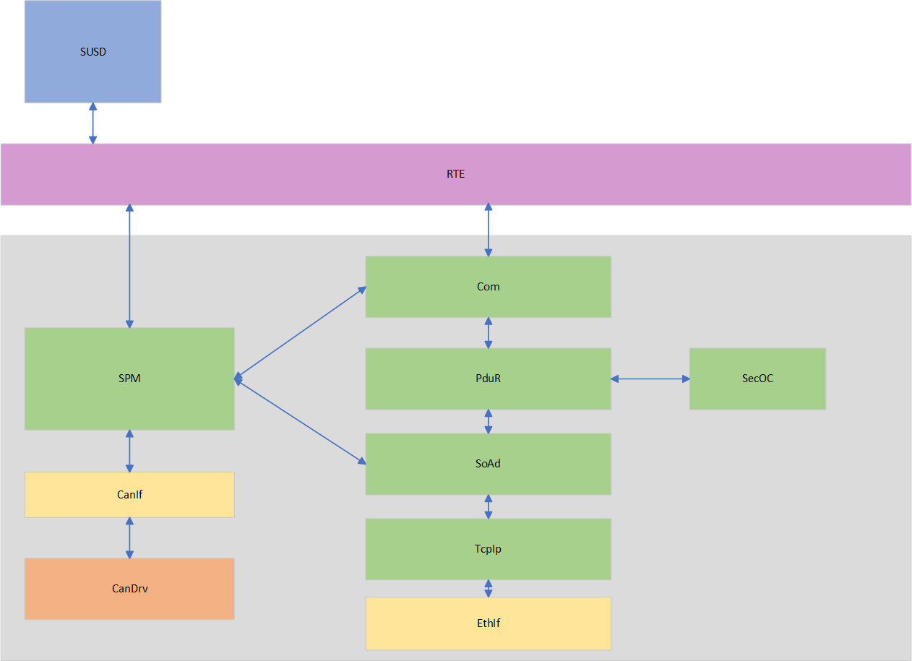
Danger
The Spm does not interact anymore with SoAd. Spm sends The Ethernet wake-up frame from RTE using metadata.
Danger
The Spm modules does not interact directly with the Com Module but Spm uses the RTE with SomeIpXfrm as middleware between Spm and Com.
References
Document Version |
Version |
|---|---|
SDV-2017 2.0 Vehicle Power Management Architecture |
3.4 - 27.181.2p0 |
SDV-8217 Mechatronic Power Manager Infrastructure Specification |
27.181.2p1 |
SDV-8201 Service Discovery Extension Specification |
27.27.175.2p0 |
SDV-6001 Diagnostic Infrastructure Specification |
27.27.184.1p0 |
Integration into RTA-CAR Project
This chapter aims to provide a guideline for the integration of RTA-SUM SPM module into an RTA-CAR project.
The RTA-SUMs plugin does not include the SPM module. So that you shall manually import the generation scripts of the RTA-SUM SPM into a RTA-CAR project. Beside you shall need to import in the RTA-CAR project the SPM EcucValues arxml file ( the sample file spm_EcucValues.arxml is provided in the release package folder 30_Integration/ ).
Prerequisites
In order to successfully follow this guide:
You shall have the RTA-CAR toolchain installed as the following list and you must be familiar with the AUTOSAR specifications, terminology and methodology,
Tool Name |
Version No. |
Description |
|---|---|---|
RTA-BSW |
12.3.3pr1 |
BSW automatic configuration and code generation. |
RTA-RTE |
12.4.0 |
RTE generator used for testing. |
Cantata |
9.5 |
Tool is used for unit testing. |
You also must be familiar with the GM specification and GM-SUM modules functionalities
OLD Create SPM module
Warning
Please don’t consider this section. The Section will be removed in the next releases!!!
In order to create the SPM module you shall follow the following steps:
Unzip the contents of the folder RTA-SUM SPM folder in your preferred location
Import in your RTA-CAR project the folder template from SPM-released unzipped folder:
You can copy the folder in your RTA-CAR project location OR import it as a linked resource, as you prefer.
In RTA-CAR, go to the project ECU Configuration and expand the menu Parameter Definition”. You must see the SPM blue container. This container includes all the module configuration containers and parameters. If you don’t see it, try to refresh the project. If it still missing, delete the imported folder and import it again
In RTA-CAR ECU Configuration, click with the right button on folder Other Modules below the root Bsw Modules, and choose Create Spm
Configure Spm module as you prefer
In order to build the Spm in your RTA-CAR project, please make sure you have the building features enable (Build Features in RTA-CAR). You can reach it by the following path in RTA-CAR: Window >>> Preferences >>> Tool Customization >>> Special Features, and then enable the checkbox Build Features. After that press on Apply and CLose.
Now you are able to build the SPM and so to generate the C code and driver SWCD. If you don’t specify an output path, the SPM C code is generated in folder _out.
RTA-CAR MemMap Tool
MemMapGen generator is able to generate the memory mapping header file for the RTA-SUM SPM module. If you can use the tool, you can find the following file AFTER you launch the generator by its dedicated plug-in:
<Project_LOCATION>/src/memmap/SPM_MemMap.h
This is an example about the generation of the MemMap file:
/*
**********************************************************************************************************************
*
* Copyright (c) ETAS GmbH 2023, all rights reserved.
* The reproduction, distribution and utilization of this document as well as the communication of its contents to
* others without explicit authorization is prohibited. Offenders will be held liable for the payment of damages.
* All rights reserved in the event of the grant of a patent, utility model or design.
*
**********************************************************************************************************************
**********************************************************************************************************************
Machine Type: MCU_RB_GENERIC
Generated by MEMMAPGEN 12.3.0
**********************************************************************************************************************
*/
/* MR12 DIR 4.10 VIOLATION: Memmap file must be included multiple times */
/* MR12 RULE 20.5 VIOLATION: AUTOSAR MemMap concept requires #undef, AUTOSAR MemMap requirements are incompatible to MISRA */
#if defined SPM_START_SEC_CODE
/* CODE pragma configuration not available, please update the respective template file */
#undef SPM_START_SEC_CODE
#elif defined SPM_STOP_SEC_CODE
/* CODE pragma configuration not available, please update the respective template file */
#undef SPM_STOP_SEC_CODE
#else
#error "SPM_MemMap.h, wrong pragma command"
#endif
Warning
In case you cannot use the MemMap tool from RTA-CAR, please make sure the file SPM_MemMap.h is present in your project, otherwise you CANNOT build successfully your SPM code.
SPM does not provide anymore the file Sum_Spm_MemMap.h as part of its release package.
Module Configuration Overview
Configuration Containers
The SPM appears as a root configuration container as any other RTA-SUM module or Bsw module. The highest hierarchical level for the SPM configuration appears as follows:
Configuration Hints
SPM Configuration Containers
SPM Configuration
Container Name |
Description |
|---|---|
SpmConfigSet |
Container for the configuration of module instance specific set |
SpmGeneral |
Container for the Configuration of project specific settings |
SpmDiagnostic |
Container with the reference needed for DIDs |
SpmETHWkUpFrmRef |
Container with the reference to the ETH wake-up frame. |
SpmCANWkUpFrmRef |
Container for the configuration of the SPM used CAN wake-up frames |
SpmVLANCom |
Container for the configuration of VLAN communication for configurable interfaces. |
SpmVLANComPwrMgrHeartbeat |
Container for the configuration of VLAN communication items for heartbeat frames. |
SpmVLANComPwrMgrWakeupFrames |
Container for the configuration of VLAN communication items for wakeup frames. |
SpmVLANComPwrMgrWakeupFramesMulticast |
Container for the configuration of VLAN communication items for Multicast wakeup frames. |
SpmVLANComSwrMgrInfo |
Container for the configuration of VLAN communication items for software manager info frames. |
SpmPowPrf |
Container for the configuration of Power Profile. At least one power profile needs to be configured for the ECU. |
SpmProfileSwDep |
Container for the configuration of Power Profile Software Dependency |
SpmPgttEntries |
Container for the configuration of Power Graph. SPM uses it for getting network information for its inter-ECU communication. Mandatory container. |
SpmTrgDvc |
Container for the configuration of Remote device information. At least one target device needs to be in communication with the current SPM instance. |
SpmTrgDvcHndlngInfo |
The current container addresses (if configured) how the current SPM shall manage the target device. Not all the target device are directly managed by the current SPM instance. In case the current SPM runs on a INTERMEDIATE node and the Target Device is an EDGE, then whether SPM handles this edge node, this container reports the useful information on how to consume the wake-up frame information for the current device. |
SpmWkngDvc |
Container for the configuration of local node network configurations. |
SpmTrgDvcInfo |
Container for the configuration of Power Profile |
SpmWkUpSeq |
Container for the configuration of a wake-up sequence. |
SpmWkUpStep |
Container for the configuration of a specific step for a wake-up sequence. |
SpmGeneral parameter definition
Parameter |
Description |
Type |
Multiplicity |
|---|---|---|---|
SpmSMMainFuncPeriodicity |
Periodicity in milliseconds for the execution of SPM Software Manager functionalities. |
FLOAT |
1 .. 1 |
SpmPMMainFuncPeriodicity |
(CURRENTLY NOT SUPPORTED. VALUE Fixed to 5ms) Periodicity in milliseconds for the execution of the SPM Power manager functionalities. |
FLOAT |
1 .. 1 |
SpmBurstPhsPeriodicity |
BurstPhsPeriodicity is a period less than the usual one, that happens as soon as SPM starts counting and sharing its heartbeat and the wake-up frame. This period is maintained for the first 3 counts. The parameter configures the message periodicity in milliseconds for this phase before switching to the normal one. |
INTEGER |
1 .. 1 |
SpmPermitExecutionMask |
The parameter is a bitmap (1 Byte length) that defines the DON’T CARE wake-up sources that trigger the SPM execution. The DON’T CARE wake-up sources needs to be configured as 1. |
INTEGER |
1 .. 1 |
SpmWkUpHelperFunction |
The parameter defines the name of the wake-up helper function to be used by SPM, in case the ECU support the SDV-8217 defined Custom wake-up mechanism. The support of this function is valid only for intermediate nodes as CHM MCU. |
STRING |
0 .. 1 |
SpmInitFuncPeriodicity |
Period in milliseconds that configures the runnable init function periodicity. This parameter is required when SpmGenerateInitRunnable is set to TRUE. |
FLOAT |
0 .. 1 |
SpmActDeactRetryPeriodicity |
Period in milliseconds for retries of activation/deactivation requests. |
INTEGER |
0 .. 1 |
SpmGenerateInitRunnable |
The parameter shall generate SPM init runnable if it is configured as TRUE. Otherwise the SPM_Init() function shall be called by a BswM action list during startup |
BOOLEAN |
1 .. 1 |
Spm_SmFrame_QueueLength |
Maximum queue length of SM Frame Rx messages. If the parameter is not configured it takes the number of target devices * number of local profiles as default value. |
INTEGER |
0 .. 1 |
Spm_PmHeartbeat_QueueLength |
Maximum queue length of PM heartbeat Rx messages. If the parameter is not configured it takes the number of target devices as default value. |
INTEGER |
0 .. 1 |
Spm_PmETHwakeUpUNIC_QueueLength |
Maximum queue length of PM eth wakeup Unicast Rx messages. If the parameter is not configured it takes the number of target devices as default value. |
INTEGER |
0 .. 1 |
Spm_PmETHwakeUpMULTIC_QueueLength |
Maximum queue length of PM eth wakeup Multicast Rx messages. If the parameter is not configured it takes the following as a default value ((SM main function periodicity / 5) + 1) SM main function periodicity. |
INTEGER |
0 .. 1 |
Spm_LocalRequests_QueueLength |
Maximum queue length of local activation/deactivatino requests as well as diagnostic requests. If the parameter is not configured it take the number of active profiles * 2 as default value. |
INTEGER |
0 .. 1 |
SpmWakeupFrame |
Wake up frame for the device. |
ENUMERATION |
1 .. 1 |
SpmWakeupBit |
Indicates the related bit for wake up in the frame. |
INTEGER |
1 .. 1 |
SpmHBShutdownDelayMs |
Initial value for the calibration parameter indicating the time (in ms) the PM has to wait, after the last burst HeartBeat has been sent, before allowing the shutdown (Keep-Awake Timer) |
INTEGER |
1 .. 1 |
SpmSMStayAwakeTimeMs |
Calibration parameter value indicating the time (in ms) during which the SM should stay awake if the only requester is in fault or restart state, before allowing shutdown. |
INTEGER |
1 .. 1 |
SpmDiagnostic parameter definition
Parameter |
Description |
Type |
Multiplicity |
|---|---|---|---|
spm_DID_E0DD_ActivationProfileActivationStatus_DCM_Ref |
Reference to the DcmDspDid for supporting DID 0xE0DD Activation Profile Activation Status |
REFERENCE |
0 .. 1 |
SpmDID0xE0DEDcmRef |
Reference to the DcmDspDid for supporting DID 0xE0DE Locally Activated Activation Profile Off Power Mode Activity Records |
REFERENCE |
0 .. 1 |
SpmDID0xE0DFDcmRef |
Reference to the DcmDspDid for supporting DID 0xE0DF Remotely Activated Activation Profile Off Power Mode Activity Records |
REFERENCE |
0 .. 1 |
SpmDID0xE0DENvmRef |
Reference to the NvM block for DID 0xE0DE Locally Activated Activation Profile Off Power Mode Activity Records |
REFERENCE |
0 .. 1 |
SpmDID0xE0DFNvmRef |
Reference to the NvM block for DID 0xE0DF Remotely Activated Activation Profile Off Power Mode Activity Records |
REFERENCE |
0 .. 1 |
SpmETHWkUpFrmRef parameter definition
Parameter |
Description |
Type |
Multiplicity |
|---|---|---|---|
SpmETHSwitchNetwork |
Reference to the network handle ID |
REFERENCE |
0 .. 0 |
SpmETHWkUpFrmTxRef |
Reference to the SOAd Pdu in Tx |
REFERENCE |
0 .. 0 |
SpmETHWkUpFrmRxRef |
Reference to the SOAd Pdu in Rx |
REFERENCE |
0 .. 0 |
SpmCANWkUpFrmRef parameter definition
Parameter |
Description |
Type |
Multiplicity |
|---|---|---|---|
SpmCANWkUpFrmTxRef |
parameters defines the references to CanIfPdu in Tx side for SPM CAN wake-up frames |
REFERENCE |
0 .. 3 |
SpmCANWkUpFrmRxRef |
parameters defines the references to CanIfPdu in Rx side for SPM CAN wake-up frames |
REFERENCE |
0 .. Inf |
SpmPowPrf parameter definition
Parameter |
Description |
Type |
Multiplicity |
|---|---|---|---|
SpmSrvcAndInstID |
The parameter defines the Profile associated software service identifier and the service instance number. Software service represents the 16 most significant bits of the configured number. The instance number the 16 less significant ones. It is assumed at least one profile is managed by the current node. |
INTEGER |
1 .. 1 |
SpmProfNumber |
The parameter defines the Profile number. |
INTEGER |
1 .. 1 |
SpmProfileIsLocal |
The parameter addresses if the current Power Profile is Local to the ECU or it is a remote service. For Local profile the value is TRUE. |
BOOLEAN |
1 .. 1 |
SpmLocActivationAllowed |
The parameter defines if the profile can be locally activated. This means that the activation request can be done by an ECU-local SWC using CLIENT/SERVER operation. Only local profile can be activated from a local SWC. So the default value is FALSE. |
BOOLEAN |
1 .. 1 |
SpmApplIntfID |
The parameter defines the profile enumeration value to be used for asking the profile activation locally. This parameter is configured only in case SpmLocActivationAllowed is TRUE. Lower multiplicity is 0 because it is valid only for local profiles |
INTEGER |
0 .. 1 |
SpmProfBitMapIndex |
The parameter maps the profile status as a specific bit of value. This value is reported by the DID E0DD and specified in SDV-6001. |
INTEGER |
0 .. 1 |
SpmProfActivationTimeOut |
OBSOLETE - NAMING MISMATCH |
INTEGER |
0 .. 0 |
SpmProfActivationTimeOutVehOff |
The parameter defines the duration in Seconds of a valid timing-window before deactivating the profile automatically. Valid only for local profiles. The default value is 0, meaning that the profile is automatically deactivated when VehiclePowerMode is OFF. |
INTEGER |
0 .. 1 |
SpmVehONDefActPriorON |
OBSOLETE - NAMING MISMATCH |
ENUMERATION |
0 .. 0 |
SpmVehDefActPriorON |
The parameter defines the profile activation priority when vehicle is going to ON. The Lower multiplicity is 0 because it is valid only for local profiles, while the Upper multiplicity is 1 because it is unique for each profile. Default value is SPM_PRF_AP_NOTAPP. |
ENUMERATION |
0 .. 1 |
SpmVehDefActPriorOFF |
The parameter defines the profile activation priority when vehicle is going to OFF. The Lower multiplicity is 0 because it is valid only for local profiles, while the Upper multiplicity is 1 because it is unique for each profile. The default value is SPM_PRF_AP_NOTAPP. |
ENUMERATION |
0 .. 1 |
SpmComIPduGroupEvnt_Tx |
The parameter defines the reference to data PDU to enable/disable in Tx once a profile request has been satisfied if the configuration requires profile to be consumed. |
REFERENCE |
0 .. Inf |
SpmComIPduGroupEvnt_Rx |
The parameter defines the references to data PDU to enable/disable in Rx once a profile request has been satisfied if the configuration requires profile to be consumed. |
REFERENCE |
0 .. Inf |
SpmProfileSwDep parameter definition
Parameter |
Description |
Type |
Multiplicity |
|---|---|---|---|
SpmProfDepType |
The parameter defines the type of dependency for the power profile. If SPM_PRF_DEP_ACT_AND_CONS then the profile is activated as services and services-data PDU are switched ON in RX by the current ECU instance. If SPM_PRF_ACTIVATED only service is activated. If SPM_PRF_CONSUMED only service-data pdu are switched ON in RX for the current ECU instance. All the dependencies need to be identified by this parameter (mandatory). |
ENUMERATION |
1 .. 1 |
SpmProfRef |
The parameter defines the reference to configured profile that acts as current profile dependency. |
REFERENCE |
1 .. 1 |
SpmTrgDvc parameter definition
Parameter |
Description |
Type |
Multiplicity |
|---|---|---|---|
SpmTrgDvcID |
The parameter defines all the IPv4 address for the target device. Each Target device could have more IP addresses since it can be reached from different VLAN. |
STRING |
1 .. Inf |
SpmTrgDvcDtcBaseID |
The parameter defines the base DTC (2 bytes) to set when the target communication is lost. |
INTEGER |
1 .. 1 |
SpmTrgDvcDtcTimeOut |
The parameter defines the maturation time to set when the target communication is lost. |
INTEGER |
1 .. 1 |
SpmTrgDvcPowerOnDeviceRetryPeriodicity |
This parameter defines the periodicity of the PowerOnDevice retry. Please, configure a value that it is greater than the sum of the SpmSeqStepDly of the wake-up sequence steps PLUS the value of SpmTrgDvcPowerOnDeviceWaitTimeBetweenOffandOnSequence PLUS the sum of the delay values between steps in the sequence PLUS the SpmTrgDvcDtcTimeOut of this TargetDevice. The value is in milliseconds. |
INTEGER |
0 .. 1 |
SpmTrgDvcPowerOnDeviceWaitTimeBetweenOffandOnSequence |
The parameter defines the time in milliseconds to wait between the OFF and ON sequence of the target device during the PowerOnDevice retry. Please, configure a value that it is greater than 250 ms to see changes in the WUF. The value it is in milliseconds. |
INTEGER |
0 .. 1 |
SpmTrgDvcDiagAddr |
The parameter defines the diagnostic address associated to the target for the diagnostic sessions. |
INTEGER |
0 .. 1 |
SpmTrgDvcHndlngInfo parameter definition
Parameter |
Description |
Type |
Multiplicity |
|---|---|---|---|
SpmTrgAssocWkUpFrm |
The parameter addresses which wake-up frame contains the information for waking it. The possibilities are wake-up frame A, B or C. Mandatory parameters so no default value is provided. |
ENUMERATION |
1 .. 1 |
SpmTrgAssocWkupBit |
The parameter addresses which bit shall be asserted in the previous wake-up frame so that SPM shall activate the target device. Mandatory parameter. |
INTEGER |
1 .. 1 |
SpmWkngDvc parameter definition
Parameter |
Description |
Type |
Multiplicity |
|---|---|---|---|
SpmNodeType |
(IMPLEMENTATION NOT-SUPPORTED YET) The parameter defines the type of dependency for the power profile. The possibilities are SPM_NODE_EDGE and SPM_NODE_INTERMEDIATE. The default value is considering the node as an intermediate. Mandatory parameter. |
ENUMERATION |
1 .. 1 |
SpmIntermediateDstAddrs |
The parameter defines list of IP address(es) of destination nodes that receive the wake-up commands and frames. For SPM_NODE_EDGE, this contains the intermediate node addresses. For SPM_NODE_INTERMEDIATE with ETH WUF support, this contains the target edge node addresses. |
STRING |
0 .. Inf |
SpmSrcIp |
The parameter defines all the IPv4 configuration of the Source Node to communicate over the network. A single SPM instance can communicate on different VLAN, so that more source addresses can be configured and supported by one single SPM. |
STRING |
1 .. Inf |
SpmDstIp |
The parameter defines all the IPv4 configuration for the Destination Node in order to communicate over the network. |
STRING |
1 .. Inf |
SpmVLANId |
parameter defines the destination address VLAN identifier |
INTEGER |
1 .. Inf |
SpmVLANComRef |
The parameter defines the reference to the container in which all the communication interfaces and datat types information are reported. |
REFERENCE |
1 .. Inf |
SpmTrgDvcInfo parameter definition
Parameter |
Description |
Type |
Multiplicity |
|---|---|---|---|
SpmTrgDvcRef |
parameters defines the references to the target device to reach |
REFERENCE |
1 .. 1 |
SpmWkUpSeqRef |
The parameter defines the reference to the wake-up sequence to use. In case this value is not configured, then it means the target device is a requester for the current SPM. |
REFERENCE |
0 .. 1 |
SpmWkUpSeq parameter definition
Parameter |
Description |
Type |
Multiplicity |
|---|---|---|---|
SpmComStepSeparatPeridoForShutDownInit |
(OBSOLETE - NOT SUPPORTED ANYMORE)parameter defines the type of command in the step |
INTEGER |
0 .. 0 |
SpmWkUpStep parameter definition
Parameter |
Description |
Type |
Multiplicity |
|---|---|---|---|
SpmStepID |
parameter defines the type of command in the step |
INTEGER |
1 .. 1 |
SpmCommandType |
The parameter defines the type of command in the step. Each command type will address a different way to wake-up a target device. |
ENUMERATION |
1 .. 1 |
SpmCommandValue |
parameter defines the value for the command step |
INTEGER |
1 .. 1 |
SpmSeqStepDly |
The parameter defines the delay in milliseconds to spend before executing the next step in the sequence. The value is mandatory but it is assumed 0 as default value. |
INTEGER |
1 .. 1 |
SpmVLANComPwrMgrHeartbeat parameter definition
Parameter |
Description |
Type |
Multiplicity |
|---|---|---|---|
SpmHbTxAbsPth |
The parameter defines absolute XML path in the extract in which the VLAN sender-receiver interface is defined. |
STRING |
1 .. 1 |
SpmHbRxAbsPth |
The parameter defines absolute XML path in the extract in which the VLAN sender-receiver interface Implementation Data Type is defined. |
STRING |
1 .. 1 |
SpmPwrMgrHeartbeatTxImpDataTypeRef |
parameters defines the references to PwrMgrHeartbeat Tx Implementation Data Type |
REFERENCE |
1 .. 1 |
SpmPwrMgrHeartbeatRxImpDataTypeRef |
parameters defines the references to PwrMgrHeartbeat Rx Implementation Data Type |
REFERENCE |
1 .. 1 |
SpmPwrMgrHeartbeatTxSendRecvIntRef |
parameters defines the references to PwrMgrHeartbeat Tx Sender Receiver Interface |
REFERENCE |
1 .. 1 |
SpmPwrMgrHeartbeatRxSendRecvIntRef |
parameters defines the references to PwrMgrHeartbeat Rx Sender Receiver Interface |
REFERENCE |
1 .. 1 |
SpmVLANComPwrMgrWakeupFrames parameter definition
Parameter |
Description |
Type |
Multiplicity |
|---|---|---|---|
SpmWkupTxAbsPth |
The parameter defines absolute XML path in the extract in which the VLAN sender-receiver interface is defined. |
STRING |
1 .. 1 |
SpmWkupRxAbsPth |
The parameter defines absolute XML path in the extract in which the VLAN sender-receiver interface Implementation Data Type is defined. |
STRING |
0 .. 1 |
SpmPwrMgrWakeupTxImpDataTypeRef |
parameters defines the references to PwrMgrWakeup Tx Implementation Data Type |
REFERENCE |
1 .. 1 |
SpmPwrMgrWakeupRxImpDataTypeRef |
parameters defines the references to PwrMgrWakeup Rx Implementation Data Type |
REFERENCE |
0 .. 1 |
SpmPwrMgrWakeupTxSendRecvIntRef |
parameters defines the references to PwrMgrWakeup Tx Sender Receiver Interface |
REFERENCE |
1 .. 1 |
SpmPwrMgrWakeupRxSendRecvIntRef |
parameters defines the references to PwrMgrWakeup Rx Sender Receiver Interface |
REFERENCE |
0 .. 1 |
SpmVLANComPwrMgrWakeupFramesMulticast parameter definition
Parameter |
Description |
Type |
Multiplicity |
|---|---|---|---|
SpmWkupRxAbsPthMulticast |
The parameter defines absolute XML path in the extract in which the VLAN sender-receiver interface Implementation Data Type is defined. |
STRING |
1 .. 1 |
SpmPwrMgrWakeupRxImpDataTypeMulticastRef |
parameters defines the references to PwrMgrWakeup Rx Multicast Implementation Data Type |
REFERENCE |
1 .. 1 |
SpmPwrMgrWakeupRxSendRecvIntMulticastRef |
parameters defines the references to PwrMgrWakeup Rx Multicast Sender Receiver Interface |
REFERENCE |
1 .. 1 |
SpmVLANComSwrMgrInfo parameter definition
Parameter |
Description |
Type |
Multiplicity |
|---|---|---|---|
SpmSmTxAbsPth |
The parameter defines absolute XML path in the extract in which the VLAN sender-receiver interface is defined. |
STRING |
1 .. 1 |
SpmSmRxAbsPth |
The parameter defines absolute XML path in the extract in which the VLAN sender-receiver interface Implementation Data Type is defined. |
STRING |
1 .. 1 |
SpmSwMgrInfoTxImpDataTypeRef |
parameters defines the references to SwMgrInfo Tx Implementation Data Type |
REFERENCE |
1 .. 1 |
SpmSwMgrInfoRxImpDataTypeRef |
parameters defines the references to SwMgrInfo Rx Implementation Data Type |
REFERENCE |
1 .. 1 |
SpmSwMgrInfoTxSendRecvIntRef |
parameters defines the references to SwMgrInfo Tx Sender Receiver Interface |
REFERENCE |
1 .. 1 |
SpmSwMgrInfoRxSendRecvIntRef |
parameters defines the references to SwMgrInfo Rx Sender Receiver Interface |
REFERENCE |
1 .. 1 |
SpmLowVoltagePowerInfo parameter definition
Parameter |
Description |
Type |
Multiplicity |
|---|---|---|---|
SpmLowVoltSwActPrioReqSignal |
Reference to the ComSignal (Service Based) that carries the LowVoltageSoftwareActivationPriorityRequest information. |
REFERENCE |
0 .. 1 |
SpmLowVoltSwActPrioReqDataServiceBased |
Reference to the implementation data type element for service based LowVoltageSoftwareActivationPriorityRequest. |
REFERENCE |
0 .. 1 |
SpmLowVoltSwActPrioReqDataTypeMappingSet |
Reference to the DATA-TYPE-MAPPING-SET in the system extract for service-based operations. |
REFERENCE |
0 .. 1 |
SpmLowVoltSwActPrioNvmRef |
Reference to NvM LowVoltageSoftwareActivationPriorityRequest NvMBlockDescriptor. |
REFERENCE |
0 .. 1 |
SpmLowVoltLVOptmzerChkApplicationInterfaceID |
LVOptmzerChk Application Interface ID of the power profile associated with the LV Energy Optimizer. |
INTEGER |
0 .. 1 |
SPM ConfigSet Notes
SpmLowVoltagePowerInfo

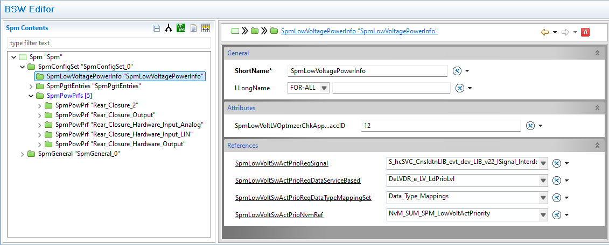
The container contains the configuration parameters for the LowVoltageSoftwareActivationPriorityRequest information. The SPM uses this information to compare the Low Voltage Priority level received by the energy optimizer with the Low Voltage Priority level of each configured Power Profile in order to decide whether a local activation request can be accepted or not OR whether to send the deactivation request for each requester. Moreover, the SPM uses this container in order to understand which is the LV Energy Optimizer with the Application Interface ID: LVOptmzerChk.
The following lines summarise what to configure to retrieve Low Voltage Priority service information from the power optimizer:
ComSignal (Service-based) with UINT8_N as ComSignalType
Valid implementation data type
Valid DataTypeMappingSet
If the Low Voltage Priority service is configured:
In order to use this feature, the integrator SHALL connect:
SpmConfPowPrf

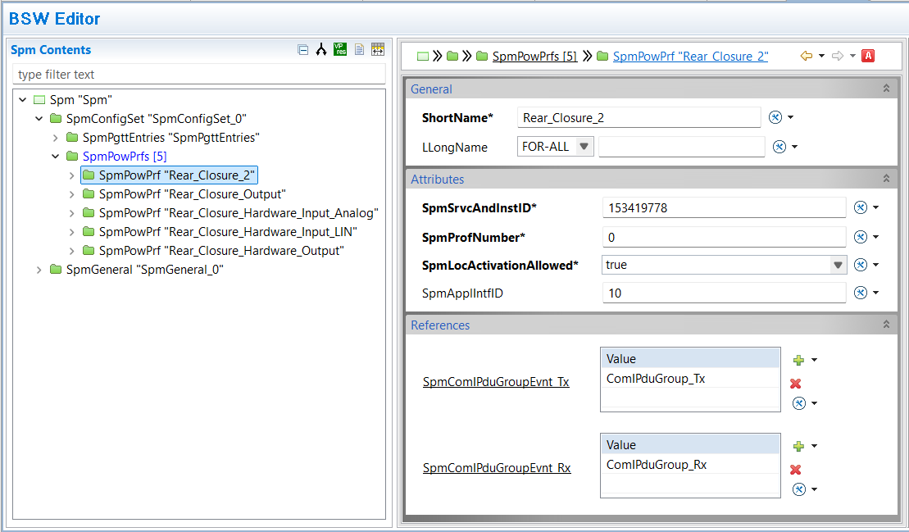
Container stores all the SPM instance-known power profiles as configuration container. Each SPM instance shall store at least one power profile as configuration parameter. On the other hand, the upper multiplicity of this container is infinite.
Please pay attention: You can have as maximum number of configured power profiles the value 4294967296. This value of is totally theoretical because not the whole set of combination can define a valid profile identifier (Look SpmSrvcAndInstID too)
Warning
No check are done on the number of configured power profile. The max allowed number is 4294967296 and this is the only performed check.
SpmSrvcAndInstID
This parameter contains the identifier of the specific power profile. It consists of 4 bytes: the 16 most significant bits denote the software service identifier of the power profile, while the 16 least significant bits denote the instance identifier of the power profile.
SpmProfNumber
This parameter represent the Profile Number of the Power Profile.
SpmProfileIsLocal
The parameter determines whether the current Power Profile is local to the ECU or a remote service.
SpmProfBitMapIndex
The parameter defines which bits corresponds to configured local power profiles in order to set the bit-map buffer for DID 0xE0DD.
Since the DID 0xE0DD can support at maximum 512 profiles, this parameter can be configured with a unique value between 0 and 511.
This parameter is mandatory for local profile, while optional for remote profiles.
Please, take into account that Confgen will populate this parameter field if the profile is local. So, if the profile is remote, this parameter will be NOT automatically populated.
SpmLocActivationAllowed
This parameter specifies if the Power Profile can be locally activated. Set to true if this Power Profile can be locally activated (i.e. the C/S operation SPM_ActivateProfile accept the request and trigger the activation routine). Set to false if this Power Profile can NOT be locally activated (i.e. the C/S operation SPM_ActivateProfile discard the request).
SpmApplIntfID
This parameter specifies the ApplicationInterfaceID (i.e. the value that SHALL be passed as input parameter to the C/S SPM_ActivateProfile/SPM_DeactivateProfile in order to activate/deactivate the Power Profile locally.)
SpmVehDefActPriorON
The parameter defines the profile activation priority when vehicle is going to ON. If not configured, the Power Profile will be not subject to any LowBatteryVoltage Priority constraints.
Moreover, the SPM will ignore the LowBatteryVoltage Priority until it receives it from the Energy Optimizer on the RP_Com_Spm_LowVoltSwActPrioReq port.
SpmVehDefActPriorOFF
The parameter defines the profile activation priority when vehicle is OFF. If not configured, the Power Profile will be not subject to any LowBatteryVoltage Priority constraints.
Moreover, the SPM will ignore the LowBatteryVoltage Priority until it receives it from the Energy Optimizer on the RP_Com_Spm_LowVoltSwActPrioReq port.
SpmComIPduGroupEvnt_Tx
The paramter defines the references to the ComIpduGroup that shall be enabled in transmission once that the power profile is activated (as root of the power profile) or if this Power Profile appears as CONSUMED dependency in a Power Profile dependency list. The same ComIpduGroup can be referenced by different Power Profiles.
SpmComIPduGroupEvnt_Rx
The paramter defines the references to the ComIpduGroup that shall be enabled in Reception once that the power profile is activated (as root of the power profile) or if this Power Profile appears as CONSUMED dependency in a Power Profile dependency list. The same ComIpduGroup can be referenced by different Power Profiles.
SpmProfileSwDeps
This sub-container represent a list of the Power Profile dependencies.
Each Power Profile depedency has the following parameter:
SpmProfDepType
Type of the dependency type. It can be:
SpmPrfRef
Reference to a Power Profile that is a dependency of the pather Power Profile.

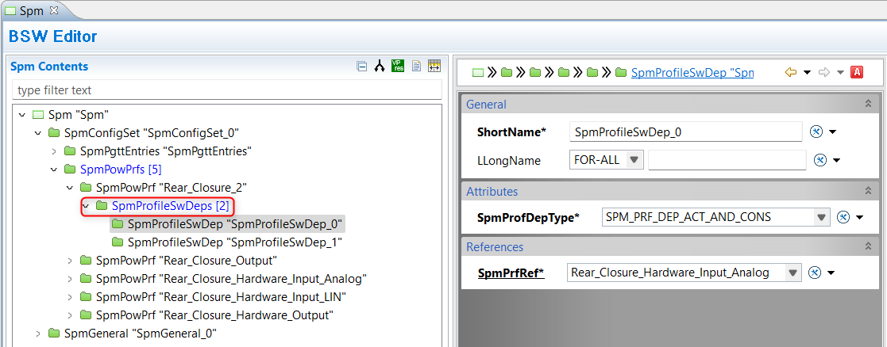
SpmPgttEntries
Container for the design of the Power-Graph Traversal Table (as specified by GM).
SpmTrgDvc

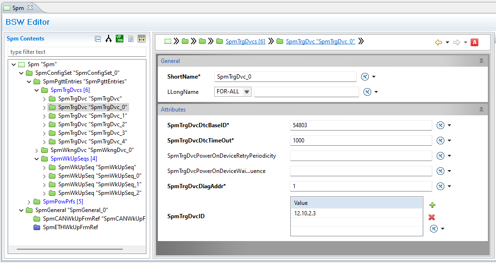
The container contains the following parameters:
The following constraint is present on this container:
Moreover, the SpmTrgDvcPowerOnDeviceRetryPeriodicity should be greater than the total time required to:
If this condition is not met, and the PowerOnDevice retry does not successfully recover the Target Device, the device will be immediately restarted.
SpmTrgDvcHndlngInfo
The container defines information that are proper for each target device. The container assumes a sense only in case the SPM instance is on a intermediate network node, so that a MCU1 ECU basically.
SPM uses the container information to understand if a remote device asks for a wake-up or a shutdown of an edge node that the SPM intermediate node itself directly handles.
The information about the wake-up or the shutdown of the edge node is part of the CAN/ETH wake-up frame that SPM intermediate node can receive.
As per SDV-2017 specification, SPM can receive three different CAN wake-up frames:
wake-up frame A
wake-up frame B
wake-up frame C
Both of the wake-up frame defines a bit-map buffer information and each bit represents a specific target device over the network. In case the bit is asserted, the associated-bit target is requested to be up, otherwise down. When the SPM intermediate node receives the wake-up information by CAN/ETH wake-up frame, it needs to check which of its controlled nodes could be requested to be up. In case, one of the controlled edge node is requested to be up by respective bit assertion in the received frame, the SPM starts executing the wake-up sequence for that edge node, using the Power Graph.
The previous information about the controlled edge node by SPM intermediate one are exactly reported in the SpmTrgDvcHndlngInfo container.
In particular, this container owns the following information:
SpmTrgAssocWkUpFrm: CAN/ETH wake-up frame in which the Target device (father container) is mapped. The value is an enumeration one in which three values are allowed (frame A, B or C)
SpmTrgAssocWkupBit: CAN/ETH wake-up frame bit to be checked as asserted or not, in order to understand if the target device is requested or not. The value is in closed range 0 to 64 due to the size of the CAN wake-up frame.
The previous mentioned configuration parameters cover the following keys of input YAML file of Power Graph that is used by confgen:
Intermediate Node Wakeup Frame Handling Information:
Directly Managed by the Waking Device: # true/false
Wakeup Frame: # A, B or C
Wakeup Bit: # which bit in the frame
As mentioned before, the configuration of the current container is only required in two cases:
SPM current instance is for an Intermediate node
SPM directly handles the target as one of its edge node.
Please be careful: the container is part of the SUM SPM configuration that is generation by ETAS confgen tool, so that NO MANUALLY CHANGE IS RECOMMENDED FOR THE CURRENT CONTAINER VALUES. The rightness of the configuration data for the following container, for all the instances, just depends from the information the User/integrator defines in the YAML file.
ETAS tools just perform the following checks with respect to the current container:
Container is configured only in case the SPM node type is intermediate (Spm/SpmConfigutSet/SpmPgttEntries/SpmWkngDvc/SpmNodeType)
SpmTrgAssocWkUpFrm allows three values to address wake-up frame A, B or C
SpmTrgAssocWkupBit allows only values in the closed range 0 and 63
The following picture reports an example to understand how the container information can be used:

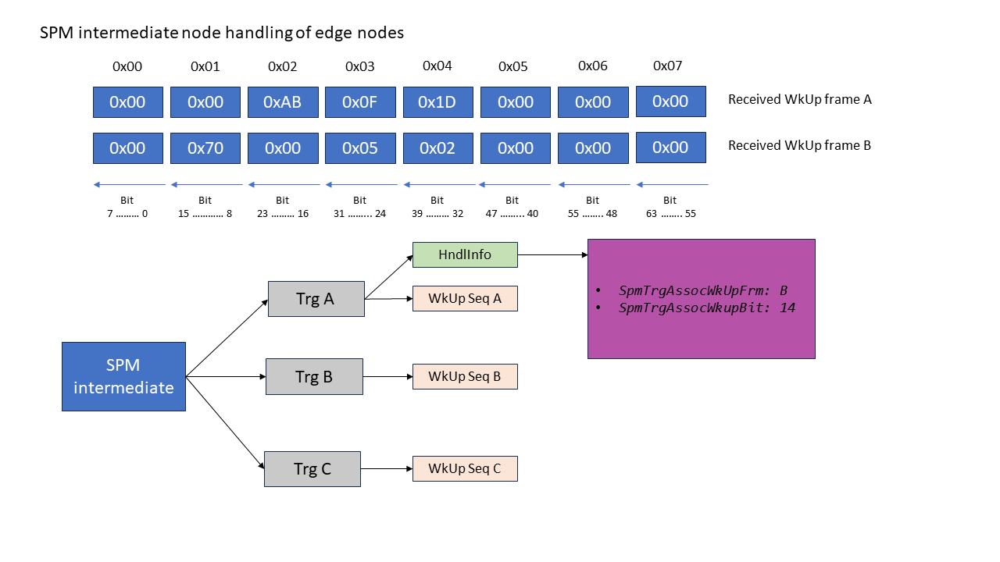
In the figure use case, the SPM is an intermediate node that manages only Target A as own edge node. For this one, SPM contains the configuration of a wake-up sequence and handling information.
From the handling information we can see the Target A is mapped in:
CAN wake-up frame B
in the 14TH bit
Always considering the use case in the pictures, SPM receives wake-up frame B in which the 14TH bit is asserted. In this case, SPM starts the execution of the wake-up sequence for Target A.
SpmWkngDvc

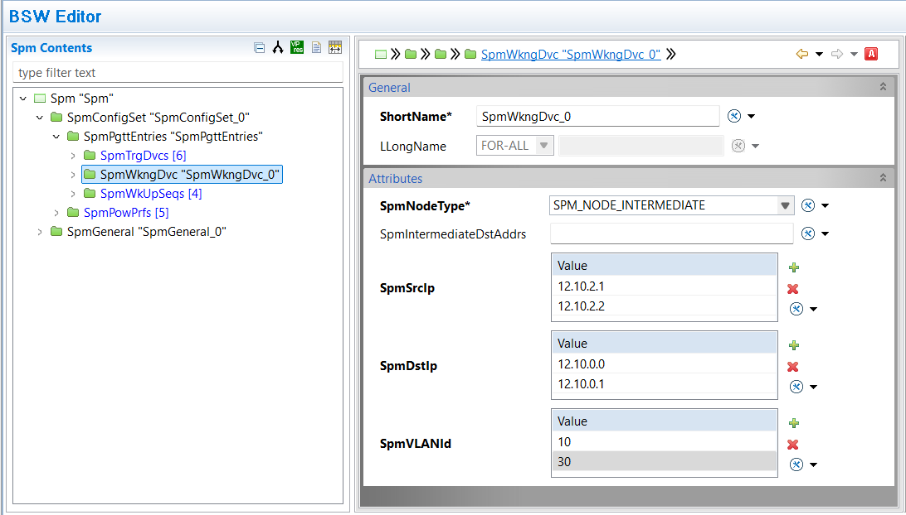
The following constraints are present on this container:

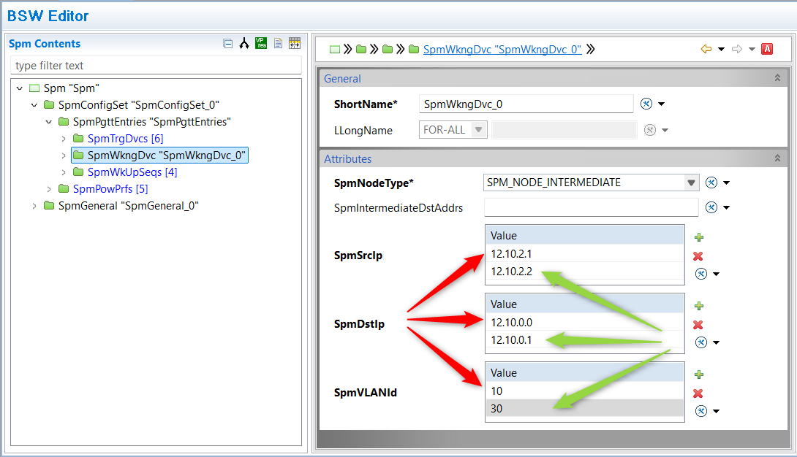
SpmTrgDvcInfo

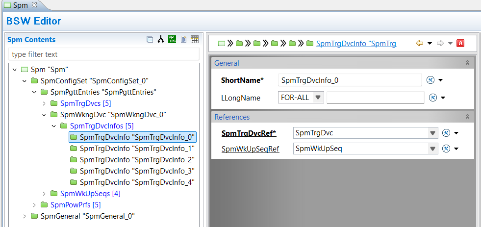
This is a wrapper container:
The following constraint is present on this container:
SpmWkUpSeq
See PowerOnDevice/PowerOffDevice and WakeUp Sequence to have information on how this information are used by SPM.
This container contains a list of SpmWkUpSteq necessary to be performed in order to turn On a SpmTrgDvc.
SpmWkUpSteq

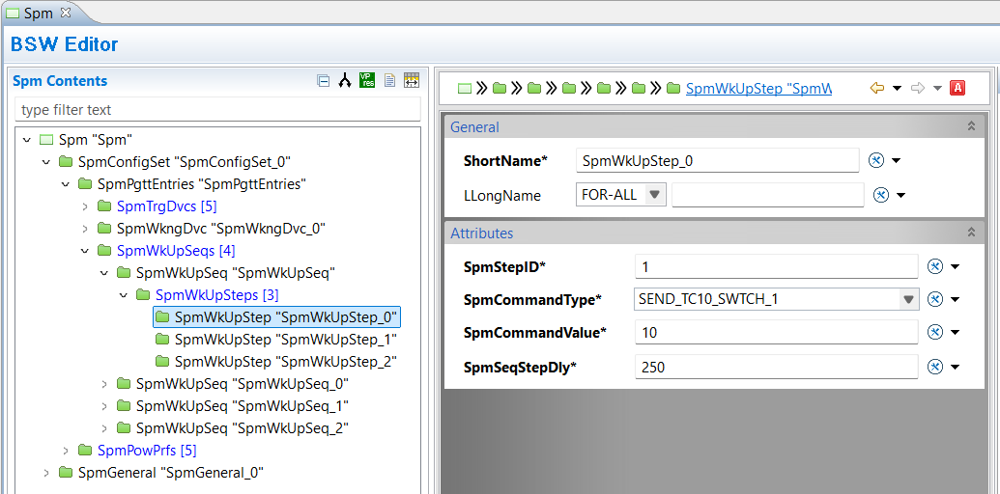
The SpmCommandType can have the following values:
The following constraint are present on this container:
NOTE: SPM module is agnostic about the real Switch AND Switch port on which the TC10 pulse will be sent. The SPM just interfaces itself with the EthSM module. The interface between SPM and EthSM is possible thanks to API EthSM_RequestComMode that receives from SPM the EthSM Network Handle Identifier for the network that maps the EthIf virtual controller on the same VLAN of the Target Device IP address. By the usage of this API AND IF the EthSM is properly configured to support the wake-up on data-line, the SPM can request the sending of TC10.
SPM General
SpmDiagnostic
This container handles the diagnostic DID related to the SPM module. The container contains the following parameters:
Spm_DID_E0DD_ActivationProfileActivationStatus_DCM_Ref
This parameter defines the reference to the DCM DID that is used to report the activation status of the Activation Profile. The value of this parameter is a reference to a DcmDspDid. If NO reference is present, the SPM will not generate the related code.
The SPM expects the configuration of the module as following:
This DID exploits the SpmProfBitMapIndex in order to define the bitmap of the activation status of the Activation Profile. So, refer to section SpmProfBitMapIndex for major details.
Please, connect the PPort PP_SPM_DCM_DID_E0DD_ActivationProfileActivationStatus to the DCM in order to exploit the SPM DID E0DD functionality.
DID 0xE0DE - Locally Activated Activation Profile Off Power Mode Activity Records
SpmDID0xE0DEDcmRef
This parameter defines the reference to the DCM DID that is used to report the Locally Activated Activation Profile Off Power Mode Activity Records. The value of this parameter is a reference to a DcmDspDid. If NO reference is present, the SPM will not generate the related code.
The SPM expects the configuration of the module as following:
Please, connect the PPort PP_SPM_Dcm_DataDidE0DE to the DCM in order to exploit the SPM DID E0DE functionality.
SpmDID0xE0DENvmRef
This parameter defines the reference to the NvM block that is used to store the Locally Activated Activation Profile Off Power Mode Activity Records for DID 0xE0DE. The value of this parameter is a reference to a NvMBlockDescriptor. If NO reference is present, the SPM will not generate the related code.
Caution
This parameter is MANDATORY if SpmDID0xE0DEDcmRef is configured. The NvM block is required to provide persistent storage for the DID 0xE0DE activity records data.
The SPM expects the configuration of the NvM block as following:
Please, ensure the NvM block is properly configured with these requirements for DID E0DE data persistence.
DID 0xE0DF - Remotely Activated Activation Profile Off Power Mode Activity Records
SpmDID0xE0DFDcmRef
This parameter defines the reference to the DCM DID that is used to report the Remotely Activated Activation Profile Off Power Mode Activity Records. The value of this parameter is a reference to a DcmDspDid. If NO reference is present, the SPM will not generate the related code.
The SPM expects the configuration of the module as following:
Please, connect the PPort PP_SPM_Dcm_DataDidE0DF to the DCM in order to exploit the SPM DID E0DF functionality.
SpmDID0xE0DFNvmRef
This parameter defines the reference to the NvM block that is used to store the Remotely Activated Activation Profile Off Power Mode Activity Records for DID 0xE0DF. The value of this parameter is a reference to a NvMBlockDescriptor. If NO reference is present, the SPM will not generate the related code.
Caution
This parameter is MANDATORY if SpmDID0xE0DFDcmRef is configured. The NvM block is required to provide persistent storage for the DID 0xE0DF activity records data.
The SPM expects the configuration of the NvM block as following:
Please, ensure the NvM block is properly configured with these requirements for DID E0DF data persistence.

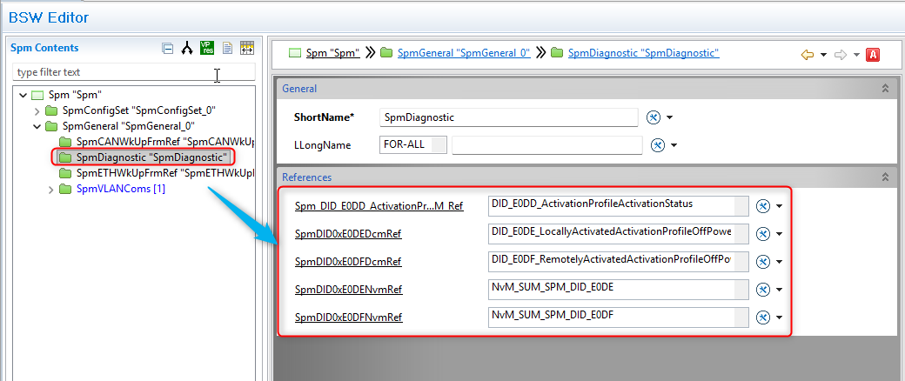
SpmMainFunctionPeriodicity
Parameter defines the timing period for scheduling the Spm main controller. The Spm main controller evaluates the status of the permit execution considering the SpmPermitExecutionMask value and the SPM instance activation criteria. The value of the parameter is in milliseconds as unit. The parameter datatype is float, this means that when you configure the parameter with a value in the open range (0,1), the the controller is scheduled in microseconds.
If you want to schedule your SPM controller in seconds, you can configure your parameter with a value greater than 1000.
Warning
Please pay attention when you configure this value. No check on the configuration has been implemented yet. According to GM specification the minimum value of the parameter shall be 1000. AN heartbeat might be also transmitted at a lower rate, but we strongly suggest to keep this value to 1 seconds = 1000 ms.
SpmPermitExecutionMask
Parameter defines the permit execution mask. SPM uses this mask to transit the SPM controller in the appropriate state. The permit execution mask is one single byte that implements a bit map. The value of the permit execution mask is computed as follows:
Each bit of the Byte value represents a specific functionality:
If the functionality is not in scope to the SPM instance, then set a 1
Otherwise set a 0
SpmWkUpHelperFunction
The parameter allows to configure the name of the wake-up helper function, in case the Project-specific requires a device Custom wake-up. The parameter is required as per SDV-8217 and it is not mandatory. If the function name is present, the function will take the received 64-bit buffer (a byte buffer) as input. When the SPM receives the CAN wake-up frame, it scans for the asserted bits in the message. Each bit corresponds to a specific target. If the target device is awaken by Board-Level wake-up (GPIO wake-up), the SPM forwards the received buffer to the helper function by invoking it using this configured name.
SPM CAN Wake-up Frame references
SpmCANWkUpFrmRef

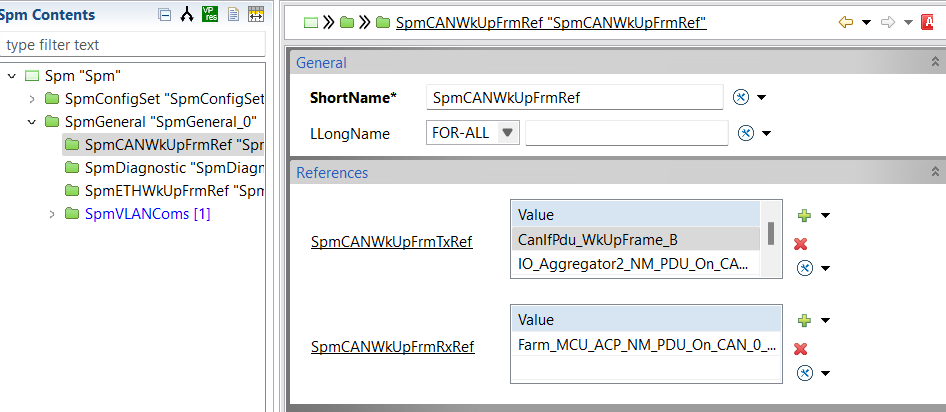
If the SPM is deployed as INTERMEDIATE node, the user need to configure two parameters in this sub-container: SpmCANWkUpFrmRxRef to receive Can Frame(s) or SpmCANWkUpFrmTxReftransmit to transmit Can frame(s). The values configured in these two parameters refers to those configured in the CanIf upper Layer.
The SpmCANWkUpFrmRefTx parameter represent the reference to the CanIfTxPduCfg that is used to send the CAN wake up frame. (The values of the configuration parameters are references to CanIf configured ones as CanIf upper Layer). Three reference are expected: WUF A, WUF B and WUF C. As per GM specification, the SPM will be deployed on CHM so the three references configured here SHALL have CanIfTxCanId 339 (WUF A), CanIfTxCanId 355 (WUF B) and CanIfTxCanId 371 (WUF C).
The SpmCANWkUpFrmRefRx parameter represent the reference to one or more CanIfRxPduCfg that are used to receive the CAN wake up frame. As per GM specification, the SPM will be deployed on CHM so the references configured here SHALL have a CanIfRxCanId in range [336-351] (WUF A only).
In addition, to receive multiple CAN Frames, careful configuration is required for proper functioning. Specifically, in the CanIf module, the user need to configure:
the same name for the <User_RxIndication> in the CanIfRxPduUserRxIndicationName parameter, enabled by selecting CDD in the CanIfRxPduUserRxIndicationUL parameter, to allow receiving CAN Frames in the <User_RxIndication> function.
CanIfRxPduRef and CanIfRxPduHrhIdRef to reference different Pdu (CanIfRxPduRef) and HRH (CanIfRxPduHrhIdRef).

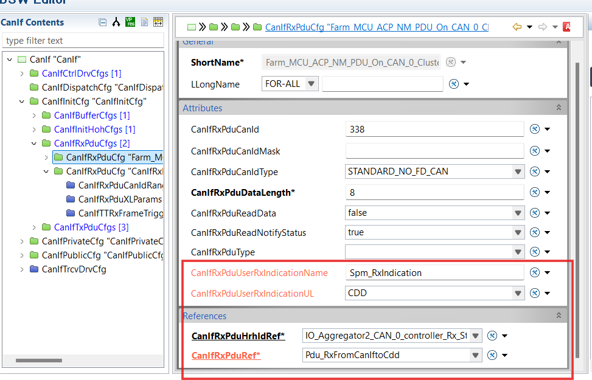

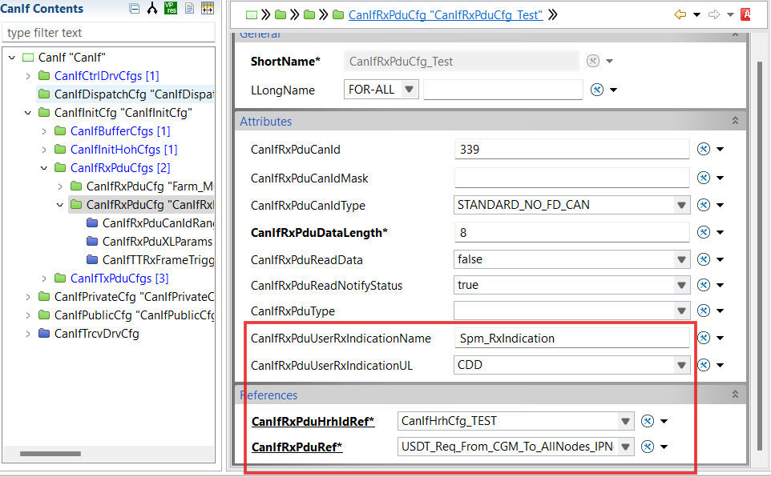
SpmGenerateInitRunnable

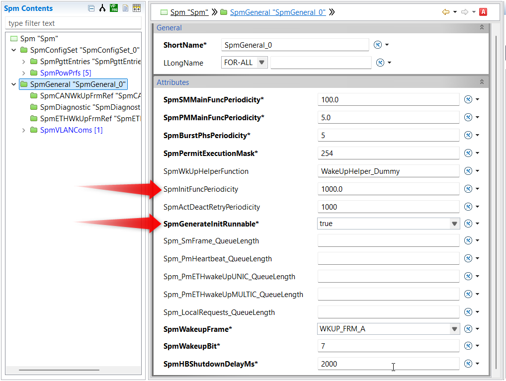
You need to configure this parameter to determine whether to generate the initial runnable. The SPM_Init function will be called just once at startup.
If it is true, you shall need to configure parameter SpmInitFuncPeriodicity for the periodicity of SPM init runnable. Otherwise, the SPM_Init functions shall be configured in the BswM init action list and to be called during the startup.

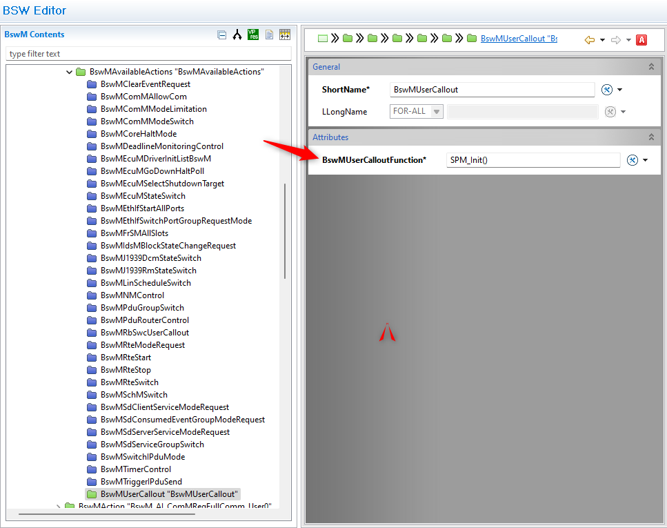

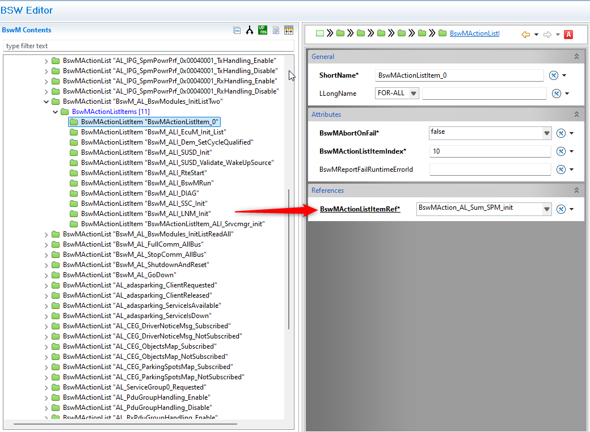
Ensure that this header file Sum_Spm.h is included correctly in the BswM configuration file for declarations related to SPM_Init.

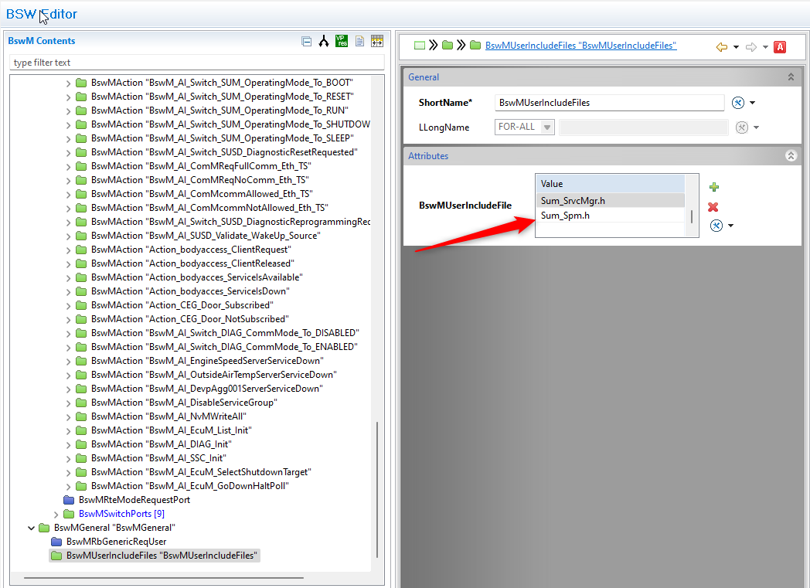
SpmInitFuncPeriodicity
Parameter defines the periodic fixed runnable for scheduling the SPM initialization phase. By default, this timing period is 1000 (ms).
You shall need to map this generated runnable to the highest priority order task when the parameter SpmGenerateInitRunnable is set to true.
SpmActDeactRetryPeriodicity
Parameter defines the periodicity of activation/deactivation requests to be sent until they are correctly acknowledged by the requested (remote) SM. By default, this timing period is 1000 (ms).
Calibratable Parameters
Heartbeat periodicity
The HeartBeat’s initial burst phase and steady state periodicity (ms) are calibratable parameters. They can be assigned values in the range [5 - 65535]. The default value of the intial burst phase periodicity is of 5ms. The default value of the steady state periodicity is of 1000ms.
Own WkUp frame information
The own WakeUp frame and the corresponding bit on it are calibratable parameters.
Both of them are configurable parameter (SpmWakeupFrame and SpmWakeupBit). The WakeUp frame can be selected among enum literals for WUF A, B or C. The WakeUp bit can be assigned a value in the range {0, …, 63}, with the default value of 0.
SPM will prevent shutdown if the own WakeUp frame bit is asserted in the received WakeUp frame.
HeartBeat Shutdown Delay
Time delay (in ms) the PM has to wait, after the last burst HeartBeat has been sent, before allowing the shutdown. It can be assigned a value in the range {0, …, 65000}. The default value of the time delay is 2000 (2s).
Spm_SmFrame_QueueLength
Maximum queue length of SM Frame Rx messages. If this value is not set then the default value used is (number of target devices * number of local profiles).
Spm_PmHeartbeat_QueueLength
Maximum queue length of Heartbeat Rx messages. If this value is not set then the default value is number of target devices.
Spm_PmETHwakeUpUNIC_QueueLength
Maximum queue length of unicast Eth wakeup messages. If this value is not set then the default value is number of target devices.
Spm_PmETHwakeUpMULTIC_QueueLength
Maximum queue length of multicast Eth wakeup messages. If this value is not set then the default value is (PowerMgrMainFunctionPeriodicity / 5 + 1).
Spm_LocalRequests_QueueLength
Maximum queue length of local and diagnostic messages. If this value is not set then the default value is (number of power profiles * 2).
NOTE: The ideal value to configure any of the queue lengths is to use the same calculation as the default values while putting in mind the RAM and busload of the system. eg: ideal value for Spm_SmFrame_QueueLength = (number of target devices * number of local profiles) as the default value but if the RAM is a constraint then a lower value shall be used.
BSW Modules Configuration Hints
Warning
This section is under development. It will be completed internally and then released once RTA-SUM SPM will be officially released for production.
Rte Configuration
The RTA-SUM SPM contains several calibration parameter. These parameters resides in the RTE generated code. The RTE generated code uses Macros from Compiler Abstraction AUTOSAR library. The usage of these Macros requires an additional configuration of the Rte Os/Rte configuration container otherwise a compilation error can appear for Macro RTE_CALPR.
If you use the SDK you have to just check that the following configuration is present in your RTA-CAR project. In case it is not, please add it manually as follows:

As picture shows, the steps are:
Open your Project
In ECU Configurator, expand “Bsw Modules” and go in Rte Os/Rte
Configure the RteSwComponentType like in the previous picture.
Calibratable Parameters
Cdd for communication
In an integration environment, the RTA-SUM SPM needs a Complex-Device Driver configuration in order to redirect the Pdu to/from the CanIf.
This is called Cdd_SPM in SDK release.
The configuration of the Cdd_SPM allows the proper CanIf code generation for RTA-BSW. On the other side, the Cdd_SPM makes possible the proper RTA-SUM SPM code generation when you configure the Pdu references in the container SpmGeneral/SpmCANWkUpFrmRef.
Caution
Don’t change the name of Cdd_SPM. If you want to change the Tx/Rx Pdus between RTA-SUM SPM and CanIf, please just edit the Pdu Reference.
Warning
The Complex Device Driver is statically provided at the moment in the SDK releases. If you don’t need CAN, please:
Remove the Cdd configuration
Make sure that No container CanIfTxPduCfg and CanIfRxPduCfg have respectively parameters CanIfTxPduUserRxIndicationUL and CanIfRxPduUserRxIndicationUL different from CDD, otherwise you must remove or you have to change to an AUTOSAR standard module.
Remove the configuration of the container SpmGeneral/SpmCANWkUpFrmRef in RTA-SUM SPM configuration
Metadata Handling by RTE Configuration Steps
Caution
PLEASE: you must consider this section IF AND ONLY IF you have the possibility to embed RTA-RTE version 12.3.1pr3 or above.
RTA-RTE directly supports the metadata handling at RTE API level and, then RTA-RTE replaces the Com call-outs of the older SPM versions.
PRE-CONDITION : If you integrate the new SUM plugin in a RTA-CAR project with a previous version, please remove the configuration of the Com Callout. You can refer to the previous User guide description to avoid the configuration of the Com. Otherwise let’s start to follow the next steps.
Open the configuration of the Com in your RTA-CAR Project AND go to path /ComConfig/ComSignals
For all SPM related signals ( they should start with S_Sig_sftpwrmgr prefix) and change the value of the parameter ComSignalType to UINT8_DYN (look image ComMetaD)
Reach the SENDER-RECEIVER interfaces sftpwrmgr_Gen, sftpwrmgr_heartbeat_Gen and SR_SPM_ETHWakeUpFrame. For both of them right click with the mouse on the names and add New Child/MetaDataItemSet (If this is not provided).
In the just created MetaDataItemSet, map in parameters DataElements the data-element SPM_dt for interface sftpwrmgr_Gen and SPM_HB_dt for interface sftpwrmgr_heartbeat_Gen, the data-element PwrMgrWakeupTxEventImpType for interface SR_SPM_ETHWakeUpFrame.
Add a MetaDataItem to the MetaDataItemSets and configure 10 as Length (refer to image SrMetaD for the final scenario)
Now you can generate the RTE code

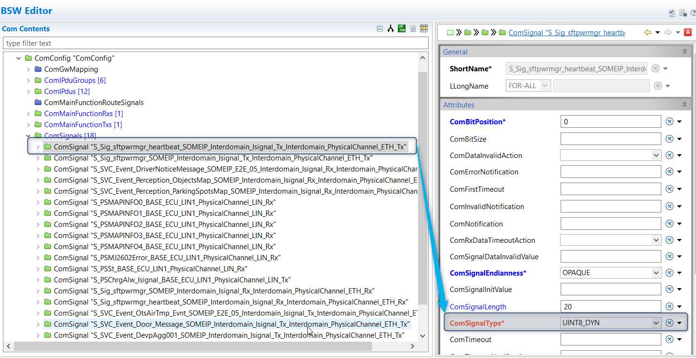

BswM Configuration
SPM can interface itself with the BswM as Upper Layer for the following features
Enable/disable PDU groups
BswM defines the BswMPduGroupSwitch action. This action allows the handling of PDU communication status. SPM acts as a Mode requester for this specific handler to the BswM.
The following are the needed steps to configure properly the BswM:
Warning
The following is just a guidelines. Refer to the BswM specification on how to properly configure the BswM module.
BswMPduGroupSwitch action
In the container Bswm/BswMConfig/BswMModeControl/BswMAction: #. create a new action #. select the type BswM_PduGroup_Action under the BswMAvailableActions and #. set reference of the PDUGroup in BswMEnabledPduGroup.

Re-do the same operation as above but set the reference of the PDUGroup in BswMDisabledPduGroup.
Action List
In the container Bswm/BswMConfig/BswMModeControl/BswMActionList, create a new action list with BswMActionListExecution set to BSWM_CONDITION add a BswmActionListItem and then for BswMActionListItemRef you need to set the reference to the action created in BswMPduGroupSwitch action (previous step).

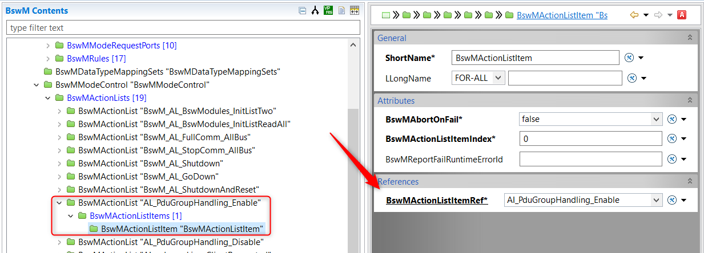
Re-do the same operation as above but set the reference to BswMActionListItemRef with the other previous action item.
Mode Request Port
In the container Bswm/BswMConfig/BswMArbitration/BswMModeRequestPort create a new Mode Request Port selecting the BSWM_IMMEDIATE value for BswMRequestProcessing. Then, go down from previous container to /BswNModeRequestSource/BswMSwcdModeNotification and configure BswMSwcdModeNotificationModeDeclarationGroupPrototyeRe with the reference to Mode-declaration group SPM_SWCD_PDUGRP.

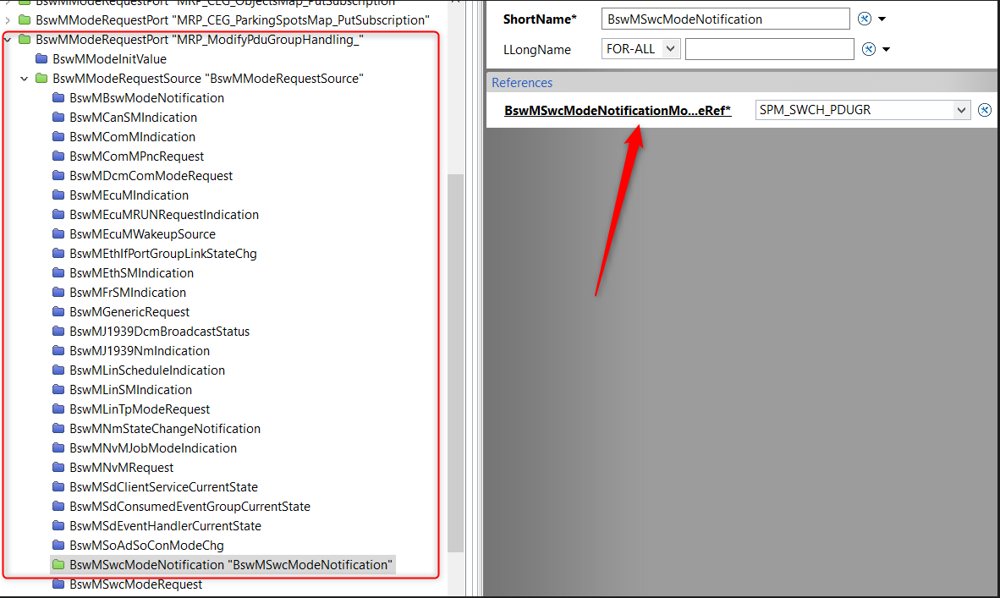
Mode Condition
In the container BswM/BswMConfig/BswMModeArbitration/BswMModeCondition create the mode condition to enable the Pdu Group. Set the bswMConditionType to BSWM_EQUALS and the BswMConditionMode to the Mode request Port previously created.

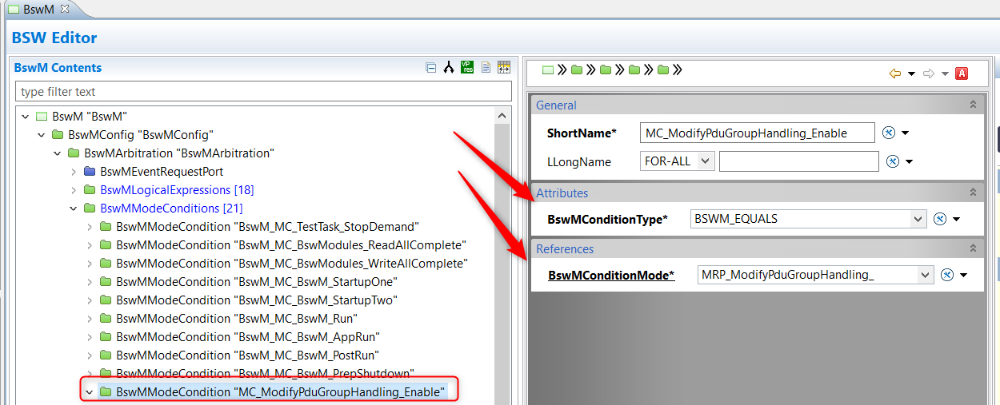
Set the BswMModeValueRef of the other BswMModeDeclaration to SPM_PDU_GROUP_ENABLE.

Logical Expressions
In the container Bswm/BswMConfig/BswMModeArbitration/BswMLogicalExpression create one logical expression.

In one BswMLogicalExpression set the BswMArgumentRef to the Mode condition previously created for enable the PDU group.
Action Rules
In the container Bswm/BswMConfig/BswMModeArbitration/BswMActionRule create one action rule. Set the BswMRuleExpressionRef to the logical expression for enable the PDU group. Set the BswMRuleFalseActionList to the action list for disable the PDU group. Set the BswMRuleTrueActionList to the action list for enable the PDU group.

Data Type Settings
In the container BswM/BswMConfig/BswMDataTypeSettings add the ref to DTMS_SPM_SrvcPduGroup.

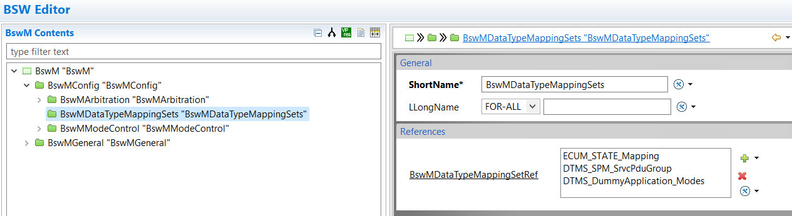
Port Connection
Connect the PP_SPM_BswM_ComIpduGroup_<<ShortNameOfThePDUGroup>> to the Mode Request Port created previously.

Notification from BswM
WHEN the communication stack for Ethernet is ready, BswM notifies the SPM. SPM needs the notification from BswM to start the counting of the Heartbeat counter to embed in the PM frames.
BswMCommunicationState switch port
In the container Bswm/BswMConfig/BswMModeControl/BswMSwitchPorts: #. create a new BswMSwitchPort #. set reference of the BswMRbModeGroupRef to SPM_MDG_CR as shown:

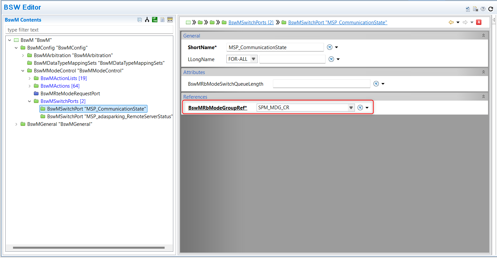
BswMCommunicationState ready action
In the container Bswm/BswMConfig/BswMModeControl/BswMAction: #. create a new action #. select the type BswM_Rte_Switch_Action under the BswMAvailableActions and #. set reference of the MSP created above and ready mode in BswMRteSwitchPortRef and BswMSwitchedMode.

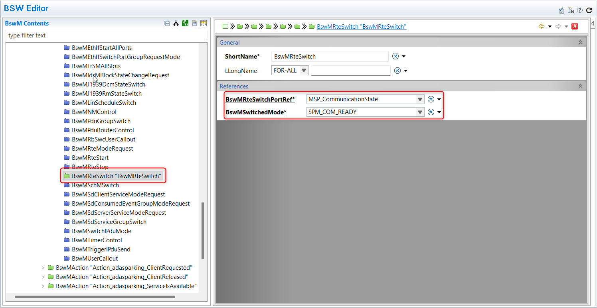
Re-do the same operation as above for NOT ready action but set the reference of the SPM_COM_NOT_READY in BswMSwitchedMode.
Action List
In the container Bswm/BswMConfig/BswMModeControl/BswMActionList, create a new action list with BswMActionListExecution set to BSWM_CONDITION add a BswmActionListItem and then for BswMActionListItemRef you need to set the reference to the action created in BswMCommunicationState ready action (previous step).

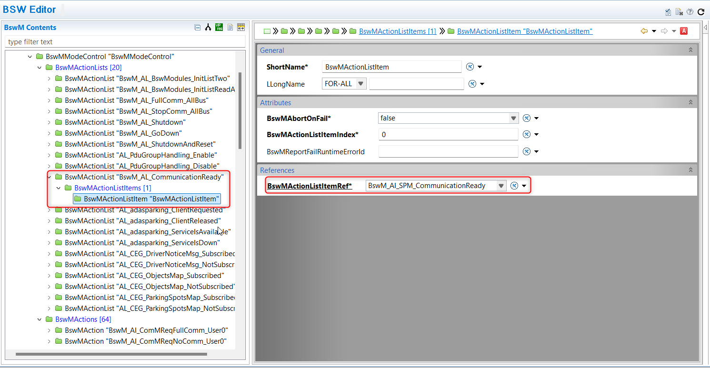
Re-do the same operation as above but set the reference to BswMActionListItemRef with the other previous action item.
Mode Request Port
1. In the container Bswm/BswMConfig/BswMArbitration/BswMModeRequestPort create a new Mode Request Port selecting the BSWM_IMMEDIATE value for BswMRequestProcessing. Then, go down from previous container to /BswNModeRequestSource/BswMSoAdSoConModeChg and configure BswMSoAdSocketIdRef with the reference to HB message socket.

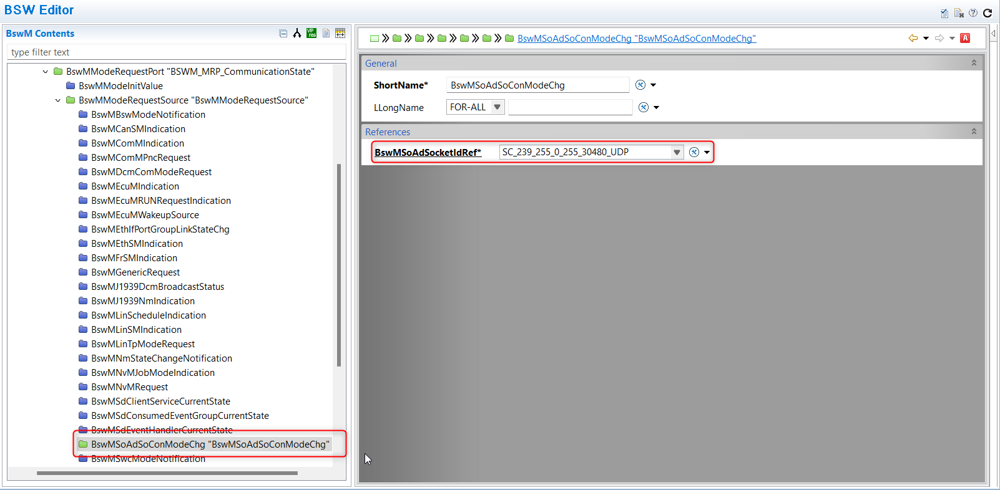
2. In the container Bswm/BswMConfig/BswMArbitration/BswMModeRequestPort create a new Mode Request Port selecting the BSWM_IMMEDIATE value for BswMRequestProcessing. Then, go down from previous container to /BswNModeRequestSource/BswMComMIndication and configure BswMComMChannelRef with the reference to ComMChannel.

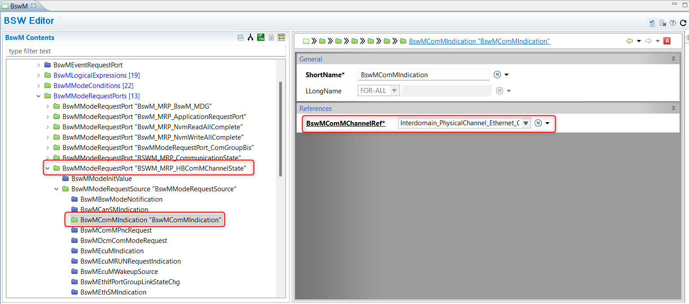
Note_1 : Integrator can check the SoAdPduRoutes container in the SoAd module to obtain the socket that reference HeartBeat_Tx_PDU
Note_2 : Integrator can check the EthSMComMNetworkHandleRef in the EthSM module to obtain the ComMChannel linked to HeartBeat_Tx_PDU
Note_3 : It’s up to the integrator to choose what is the kind of the mode request and logical expression that can notify the SPM once Ethernet stack and HB socket are ready for communication.
Mode Condition
1. In the container BswM/BswMConfig/BswMModeArbitration/BswMModeCondition create the mode condition to switch the socket MRP to socket online. Set the bswMConditionType to BSWM_EQUALS and the BswMConditionMode to the Mode request Port previously created for the SocketState.

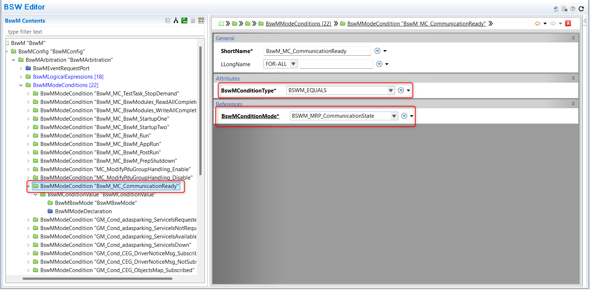
Set the BswMBswRequestMode of the other BswMBswMode to SOAD_SOCON_ONLINE.

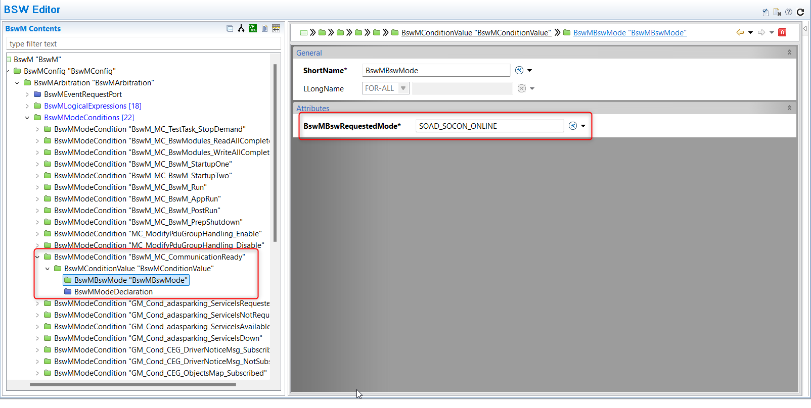
2. In the container BswM/BswMConfig/BswMModeArbitration/BswMModeCondition create the mode condition to switch the ComMChannel MRP to full communication. Set the bswMConditionType to BSWM_EQUALS and the BswMConditionMode to the Mode request Port previously created for the ComMChannel.

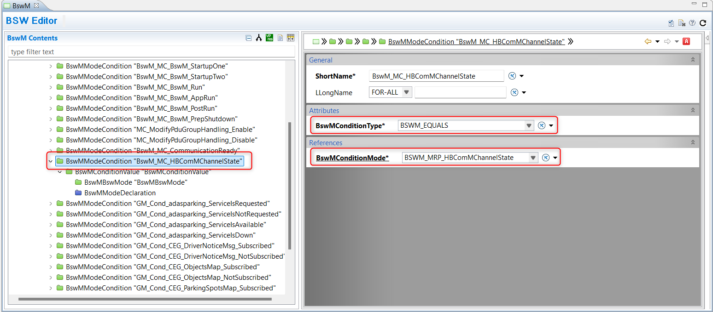
Set the BswMBswRequestMode of the other BswMBswMode to COMM_FULL_COMMUNICATION.

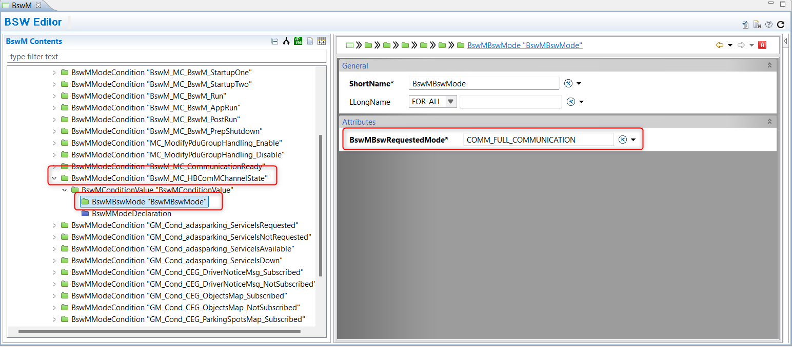
Logical Expressions
In the container Bswm/BswMConfig/BswMModeArbitration/BswMLogicalExpression create one logical expression, set the BswMLogicalOperator to AND.

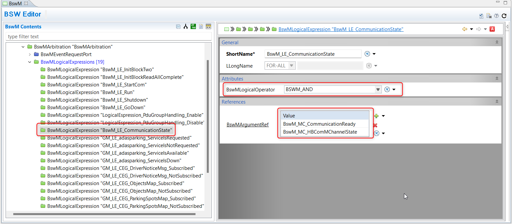
In one BswMLogicalExpression set the BswMArgumentRef to both of the Mode conditions previously created for switching port to communication ready.
Action Rules
In the container Bswm/BswMConfig/BswMModeArbitration/BswMActionRule create one action rule. Set the BswMRuleExpressionRef to the logical expression for swtiching communication. Set the BswMRuleFalseActionList to the action list for switching communication to not ready. Set the BswMRuleTrueActionList to the action list for switching communication to ready.

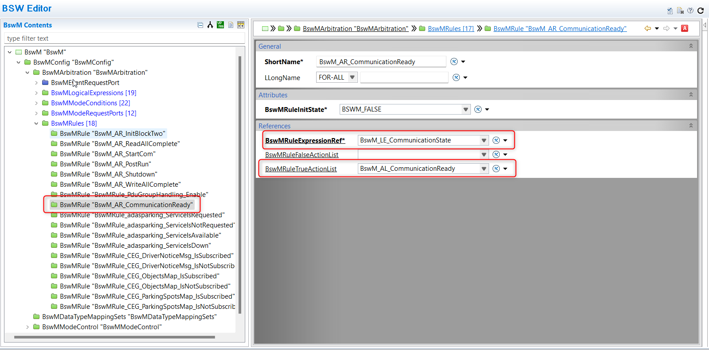
Data Type Settings
In the container BswM/BswMConfig/BswMDataTypeSettings add the ref to DTMS_SPM_CommunicationReady.

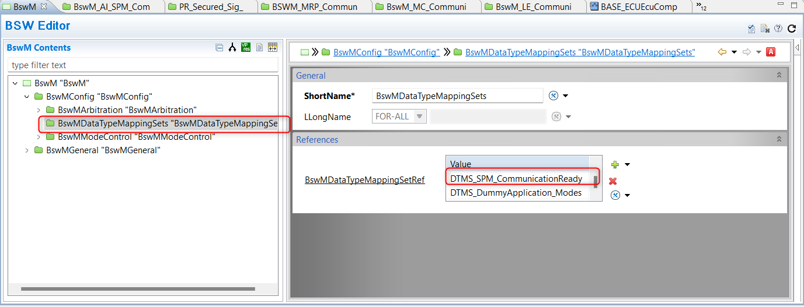
Port Connection
Connect the PP_SPM_BswM_CommunicationState to the Mode Request Port created previously.

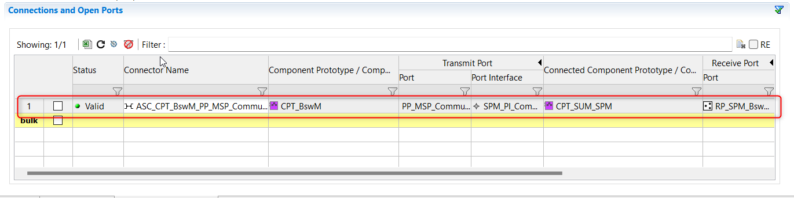
Local Activation/Deactivation
SPM receives local request to activate/deactivate a Power Profile through the C/S interface CS_SPM_ProfileRequest, C/S operation SPM_ActivateProfile()/SPM_Deactivate() profile.
It is necessary to connect the PP_SPM_RequestProfile and PP_SPM_RequestProfile_Deact ports in order to exploit the operation.
Please, take into account that the method expect as input parameter an uint16 value that shall match with the SpmApplIntID related to the desired Power Profile.
Service discovery learning indication management logic
SPM is notified about current Learning Session status through the C/S interface SPM_SDLearningStatusIndication, C/S operation Runnable_SPM_SdLearningStatusIndication().
It is necessary to connect the PP_SPM_SrvcMgr_SdLearningStatusIndication in order to exploit the operation.
Profile Activation Permission
SPM receives queries for activation permission of a Power Profile through the C/S interface CS_SPM_ProfileActivationPermission, C/S operation SPM_GetProfileActivationPermission.
It is necessary to connect the PP_SPM_ProfileActivationPermission port in order to exploit the operation.
Please, take into account that the method expect as input parameter an uint16 value that shall match with the SpmApplIntID related to the desired Power Profile.
Power Profile State
SPM receives queries for current state of a Power Profile through the C/S interface CS_SPM_RequestStatusProfileState, C/S operation SPM_GetProfileState.
It is necessary to connect the PP_SPM_RequestStatusProfileState port in order to exploit the operation.
Please, take into account that the method expect as input parameter an uint16 value that shall match with the SpmApplIntID related to the desired Power Profile.
SM Frame integration
The data structure SM frame is defined inside the ECU-EXTRACT. Since the size of the item contained by it can change, the integrator shall set correctly the macro SPM_NUMBER_ITEM_IN_SM_FRAME defined in the static file Sum_Spm_Integration.h.
DID 0xE0D7 Support
DID 0xE0D7 is handled by SUSD. SPM communicates with SUSD through the C/S interfaces:
SUSD_SPM_UpdateRecord: to update the DID 0xE0D7 record;
SPM_SUSD_ActivityRecordCmd: to obtain information about the state of DID 0xE0D7 record and perform additional actions on its behalf.
So, if needed, please connect the RP_SUSD_SPM_UpdateRecord and PP_SPM_SUSD_ActivityRecordCmd ports to the SUSD module.
DID 0xE0DE Support
Configure the DCM DID reference in the SPM diagnostic container (see DID 0xE0DE - Locally Activated Activation Profile Off Power Mode Activity Records for details)
Connect the
RP_SPM_Dcm_E0DE_Writeport to the NvM module to enable persistent storage of the activity recordsEnsure proper NvM block configuration for storing the DID data
DID 0xE0DF Support
Configure the DCM DID reference in the SPM diagnostic container (see DID 0xE0DF - Remotely Activated Activation Profile Off Power Mode Activity Records for details)
Connect the
RP_SPM_Dcm_E0DF_Writeport to the NvM module to enable persistent storage of the activity recordsEnsure proper NvM block configuration for storing the DID data
Appendix A: Generic Component Interface
Port Interface |
Type |
Source |
Destination |
Description |
|---|---|---|---|---|
sftpwrmgr_Gen |
S/R |
Spm
LdCom / Com
|
LdCom/Com
Spm
|
Interface contains datatype that represents SM-to-SM message |
sftpwrmgr_heartbeat_Gen |
S/R |
Spm
LdCom / Com
|
LdCom/Com
Spm
|
Interface contains datatype that represents PM-to-PM heartbeat |
SUSD_PermitExecution |
S/R |
SUSD |
Spm |
Interface contains the permit execution value from SUSD |
SPM_ShutdownPermission |
S/R |
Spm |
SUSD |
Interface contains the shutdown permission to provide to SUSD |
CS_SPM_ProfileRequest |
C/S |
SWC |
Spm |
Interface contains API for (de)activating request of power profile |
CS_SPM_RequestStatusProfileState |
C/S |
SWC |
Spm |
Interface contains API for getting state of power profile |
CS_SPM_ProfileActivationPermission |
C/S |
SWC |
Spm |
Interface contains API for getting activation permission for power profile |
SPM_GetDTCIdentifier |
C/S |
SWC |
Spm |
Interface contains API for getting DTC for Target Device from SPM. |
SPM_ServiceActivationStatusNotification |
S/R |
Spm |
SWC |
Interface contains API for informing with the list of all the |
SPM_ComIpduGroup |
M/S |
Spm |
BswM |
Interfaces for switching the ComIpduGroup modes as requested. |
SPM_CommunicationReady |
M/S |
BswM |
Spm |
Interfaces for switching the communication state for the SPM to start sending HB frames. |
SrvcMgr_SPM_ActivateService |
C/S |
Spm |
SrvcMgr |
Interface for asking to Service Manager the activation of a service. |
SR_SPM_ETHWakeUpFrame |
S/R |
Spm
LdCom/Com
|
LdCom/Com
Spm
|
Interface for sending/receiving the Ethernet Wake-up Frame |
SUSD_SPM_UpdateRecord |
C/S |
SPM |
SUSD |
Interface for updating the DID 0xE0D7 record in SUSD. |
SPM_SUSD_ActivityRecordCmd |
C/S |
SUSD |
SPM |
Interface for getting the state of DID 0xE0D7 in SUSD and additional commands on its behalf |
DataServices_<DID> |
C/S |
Dcm |
SPM |
Interfaces to provide data from SPM to Dcm for the following DIDs:
Each DID has its own DataServices_Interface |
<VLAN>_PwrMgrHeartbeatTx_Evt |
S/R |
Spm |
LdCom/Com |
Interface for sending the Power Manager Heartbeat frame to the specific VLAN |
<VLAN>_PwrMgrHeartbeatRx_Evt |
S/R |
Spm |
LdCom/Com |
Interface for receiving the Power Manager Heartbeat frame to the specific VLAN |
<VLAN>_PwrMgrWakeupTx_Evt |
S/R |
Spm |
LdCom/Com |
Interface for sending the Power Manager Wakeup frame to the specific VLAN |
<VLAN>_PwrMgrWakeupRx_Evt |
S/R |
Spm |
LdCom/Com |
Interface for receiving the Power Manager Wakeup frame to the specific VLAN |
<VLAN>_SwMgrInfoTx_Evt |
S/R |
Spm |
LdCom/Com |
Interface for sending the Switch Manager Info frame to the specific VLAN |
<VLAN>_SwMgrInfoRx_Evt |
S/R |
Spm |
LdCom/Com |
Interface for receiving the Switch Manager Info frame to the specific VLAN |
RxMonitoredSignal_Av |
S/R |
SSFM |
SPM |
Interface for receiving the availability of the Low Voltage priority service |
SPM_LowVoltSwActPrioReq |
S/R |
COM |
SPM |
Interface for receiving the payload of the Low Voltage priority service |
NvMService |
C/S |
SPM |
NvM |
Interface for triggering NvM_WriteAll when a new Low Voltage priority level is received |
SPM_SDLearningStatusIndication |
C/S |
SrvcMgr |
SPM |
Interface for requesting SPM to react on Learning Session Status |
Appendix B: History Review
Version |
Description of Change |
Author |
|---|---|---|
0.0.1 |
|
RTA-SUM Development Team |
0.0.2 |
|
RTA-SUM Development Team |
0.0.3 |
|
RTA-SUM Development Team |
0.4.4 |
|
RTA-SUM Development Team |
0.0.5 |
|
RTA-SUM Development Team |
0.0.5_1 |
|
RTA-SUM Development Team |
0.0.6 |
|
RTA-SUM Development Team |
0.0.7 |
|
RTA-SUM Development Team |
0.0.8 |
|
RTA-SUM Development Team |
8.1.0_Pr1 |
|
RTA-SUM Development Team |
8.1.0_Pr2 |
|
RTA-SUM Development Team |
8.1.0_Pr3 |
|
RTA-SUM Development Team |
8.1.0_Pr4 |
|
RTA-SUM Development Team |
8.1.0_Pr5 |
|
RTA-SUM Development Team |
8.1.0_Pr6 |
|
RTA-SUM Development Team |
8.1.0_Pr11 |
|
RTA-SUM Development Team |
8.1.0_Pr12 |
|
RTA-SUM Development Team |
8.1.0_Pr13 |
|
RTA-SUM Development Team |
8.1.0_Pr15 |
|
RTA-SUM Development Team |
8.1.0_Pr16 |
|
RTA-SUM Development Team |
8.1.0_Pr17 |
|
RTA-SUM Development Team |
8.1.0_Pr20 |
|
RTA-SUM Development Team |
8.1.0_Pr21 |
|
RTA-SUM Development Team |
8.1.0_Pr22 |
|
RTA-SUM Development Team |
8.1.0_Pr23 |
|
RTA-SUM Development Team |
8.1.0_Pr27 |
|
RTA-SUM Development Team |
8.1.0_Pr28 |
|
RTA-SUM Development Team |
Appendix C: Customer information in scope to current software version
The current RTA-SUM SPM version, contains the module ports to/from RTE for sending and receiving “SPM Traffic frames”. these frames are someIP Pdu, that SPM generates to send/provide information/requests from/to remote(s) SPM. The SPM traffic includes:
SM frame
PM frame (Heartbeat)
Caution
The current version of the SPM can be integrated in the SDK 0.2.0 but the support of the metadata, in scope to RTA-SUM SPM, is not currently enabled. SO that, the metadata handling for these frames are in scope to the integrator.
while SDK 0.2.0 si based on ECU extract IO_Aggregator2_27_27_171.3p0, the current implementation of the RTA-SUM SPM allows also to build the payload of SM and PM frames as per IO_Aggregator2_27_27_174.2p0.
The current version of RTA-SUM SPM requires the Queued communication for the SPM ports that contains the payloads SPM traffic. The queueing specification are directly generated by RTA-SUM SPM code generation. The only thing that is out-of-scope from RTA-SUM SPM code generation is the definition of the port-interfaces for the SPM traffic; in fact they are directly referenced from System description of the integrator.
this means you shall verify that your port definitions are aligned with the following picture:

Contacting ETAS
Technical Support
General Enquiries
ETAS Global Headquarters
ETAS Local Sales and Support Offices
Contact details for your local sales office and local technical support team (where available) can be found on the ETAS web site:
ETAS subsidiaries: https://www.etas.com/en/contact.php
ETAS technical support: https://www.etas.com/en/hotlines.php